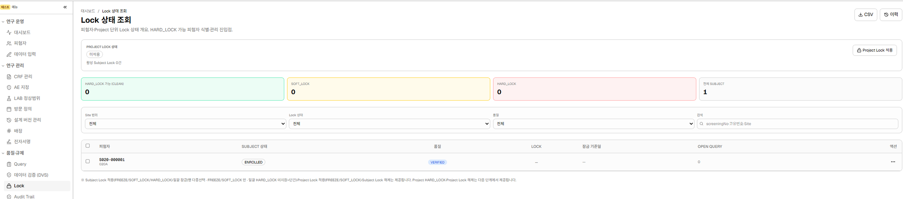
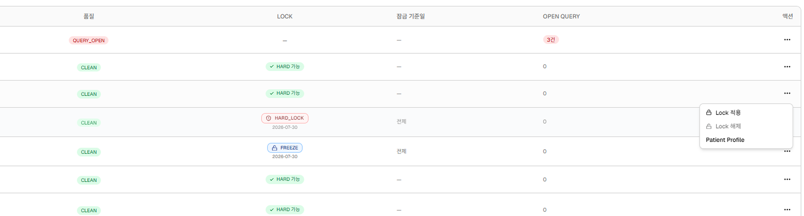
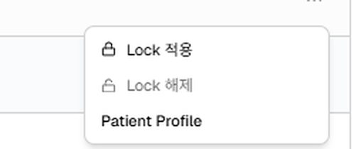
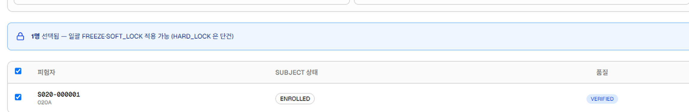
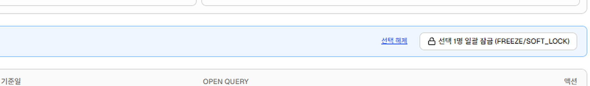
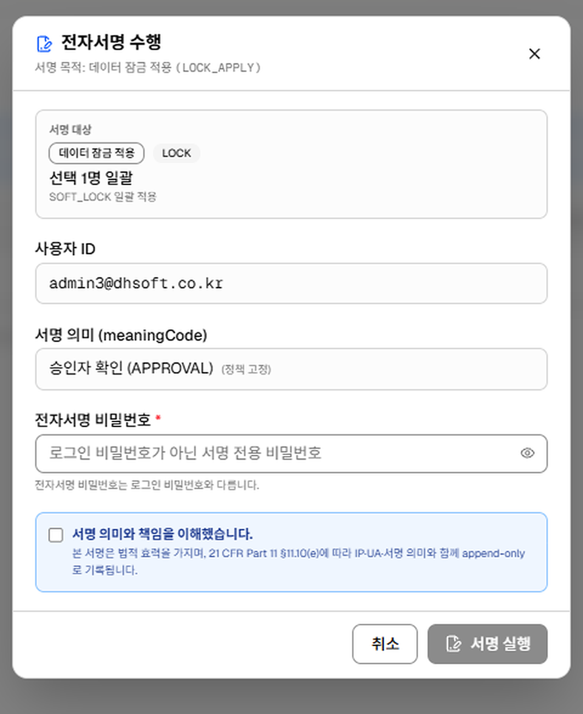
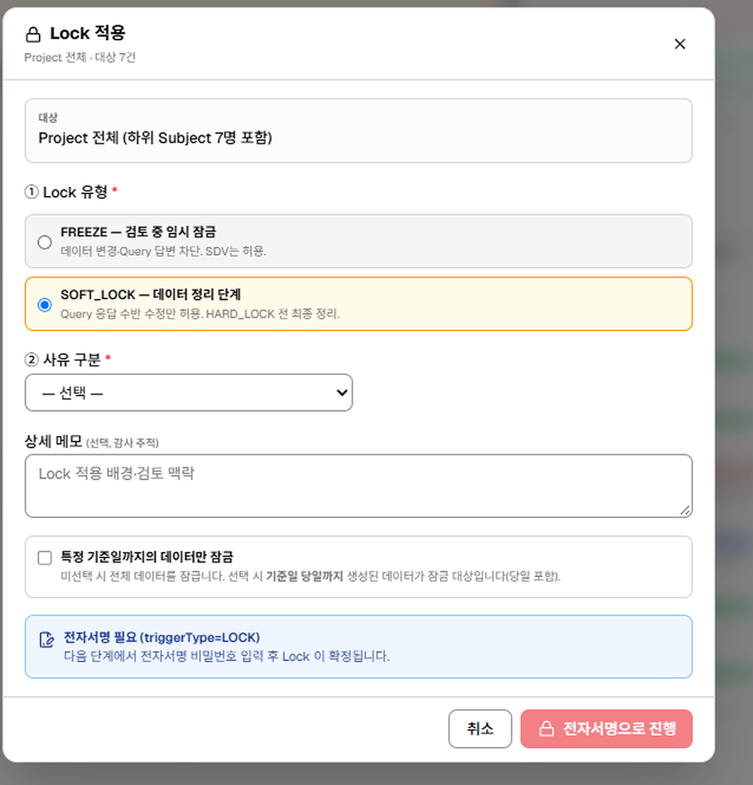
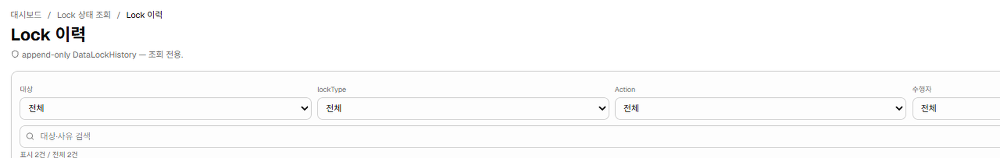
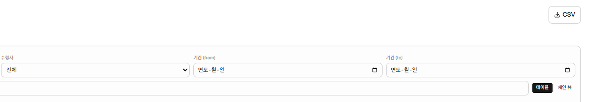
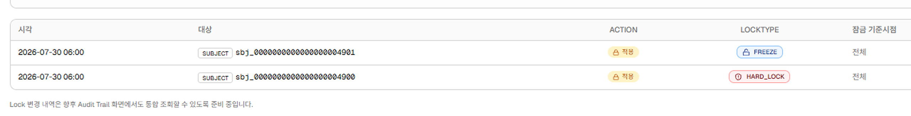

Lock
SCR-LOCK-001·002·003·004 · 상태 조회 · 적용 · 전자서명 · 해제 · 이력
Lock 상태 조회
- 1.1화면 구성
- 1.2Lock 상태 한눈에 보기
- 1.3피험자 목록과 행 액션
1.1화면 구성
개요
입력이 끝난 자료를 더 바뀌지 않게 잠그고, 무엇이 잠겼는지 한눈에 보는 화면입니다. 잠금은 피험자 단위와 프로젝트 전체 두 층으로걸 수 있고, 적용·해제 모두 사유를 남기고 전자서명으로 확정합니다. 화면은 위에서부터 프로젝트 잠금 → 집계 → 필터 → 피험자 목록 순서입니다.
화면 설명

「CSV」 — 지금 보고 있는 피험자 Lock 목록을 파일로 내려받습니다.
「이력」 — 잠금·해제 기록을 모아 보는 화면으로 이동합니다 4.1. 그 화면으로 가는 길은 이 버튼뿐입니다.
「Project Lock 적용」 — 프로젝트 전체를 한 번에 잠급니다 2.4. 데이터 관리자에게만 표시됩니다.
화면 부제가 이 화면의 역할을 밝힙니다 — “피험자·Project 단위 Lock 상태 개요. HARD_LOCK 가능 피험자 식별·관리 진입점.”
Project Lock 상태 — 프로젝트 전체 잠금 여부와 활성 피험자 잠금 건수 1.2.
집계 4종 — 잠금 현황을 숫자로 요약합니다 1.2.
필터 4종 — 참여 기관 · Lock 상태 · 품질 · 검색. 검색은 스크리닝번호 · 고유번호 · 기관코드로 찾습니다.
피험자 목록 — 피험자별 잠금 상태와 액션 1.3.
하단 안내 — 지금 제공되는 기능 범위를 적어 둔 줄입니다 (아래 유의사항).
왼쪽 메뉴의 「품질·규제 > Lock」 이 이 화면의 자리입니다.
접근 경로
- • 왼쪽 메뉴 「품질·규제 > Lock」 — 프로젝트에 들어온 뒤에만 나타납니다.
- • 프로젝트 대시보드 > 「Lock 현황」 위젯 의 「Lock 관리 →」
- • 프로젝트 대시보드 > 「데이터 품질」 위젯 의 「피험자 품질·Lock 목록」 — 품질을 보다가 잠금으로 넘어오는 길입니다.
유의사항
필수 확인 데이터 손상 · 폼 완료 불가
- • 하단 안내 줄의 마지막 문장은 현재 화면과 맞지 않습니다. “Project HARD_LOCK·Project Lock 해제는 다음 단계에서 제공됩니다” 라고 적혀 있지만, 프로젝트 잠금 해제는 이미 제공됩니다 — 프로젝트가 잠긴 상태에서 같은 자리에 「Project Lock 해제」 버튼이 나타납니다. 안내문만 예전 그대로 남은 것이며, 프로젝트 전체를 HARD_LOCK 으로 잠그는 것이 아직 제공되지 않는다는 부분은 맞습니다.
1.2Lock 상태 한눈에 보기
개요
목록을 하나씩 세기 전에 지금 이 프로젝트가 어디까지 잠겼는지를 보여 주는 영역입니다. 맨 위 카드가 프로젝트 전체 잠금, 그 아래 네 칸이 피험자 단위 집계입니다. 집계는 필터와 무관하게 전체 피험자를 기준으로 셉니다 — 필터를 걸어도 이 숫자는 바뀌지 않습니다.
화면 설명


「Project Lock 적용」 — 프로젝트 전체를 잠급니다 2.4. 이미 잠겨 있으면 같은 자리가 「Project Lock 해제」 로 바뀝니다.
프로젝트 잠금 상태 — 캡처는 「미적용」 입니다. 잠겨 있으면 그 자리에 잠금 유형 배지와 적용일이 표시됩니다.
활성 Subject Lock 건수 — 지금 잠겨 있는 피험자 수입니다. 프로젝트가 잠긴 경우에는 “Project Lock 적용 중 — 하위 Subject Lock 단독 해제 차단” 이 함께 표시됩니다 (1.3 유의사항 참조).
HARD_LOCK 가능 (CLEAN) — 품질이 CLEAN 이면서 아직 잠기지 않은 피험자 수입니다. VERIFIED 는 여기에 들어가지 않습니다.
SOFT_LOCK — 데이터 정리 단계로 잠긴 피험자 수.
안내 배너 — “HARD_LOCK 가능 피험자 4명 — 품질 CLEAN + Open Query 0건 조건 충족. HARD_LOCK 은 각 Subject 단건 적용(전제조건 검증) · 일괄은 FREEZE·SOFT_LOCK 만 지원.” 가능한 피험자가 한 명도 없으면 이 배너가 나타나지 않습니다.
HARD_LOCK — 완전히 잠긴 피험자 수.
전체 Subject — 프로젝트의 전체 피험자 수. 앞 세 숫자의 합과 같지 않습니다 — 잠기지 않았고 품질도 CLEAN 이 아닌 피험자는 어디에도 세지 않기 때문입니다.
잠금 유형 3종
| 잠금 유형 | 무엇이 막히는가 | 쓰는 때 |
|---|---|---|
| FREEZE | 데이터 변경과 Query 답변을 차단. 원자료 대조(SDV)는 허용 | 검토 중 임시로 묶어 둘 때 |
| SOFT_LOCK | Query 응답에 따른 수정만 허용 | 데이터 정리 단계 · 완전 잠금 직전 |
| HARD_LOCK | 완전 잠금. 피험자 단건으로만 적용되며 전제조건 검증을 통과해야 함 | 자료를 확정할 때 |
유의사항
오해하기 쉬운 동작
- • 「HARD_LOCK 가능」은 품질이 CLEAN 인 피험자만 셉니다. 품질이 VERIFIED 인 피험자는 원자료 대조까지는 끝났어도 이 숫자에 들어가지 않고, 목록의 Lock 열에도 「HARD 가능」 배지가 붙지 않습니다. 잠글 준비가 된 것처럼 보이는데 숫자가 0 이면 품질 열을 먼저 확인하십시오.
1.3피험자 목록과 행 액션
개요
피험자 한 명이 한 행입니다. 잠글 수 있는 상태인지는 품질 · Lock · Open Query 세 열을 함께 봐야 알 수 있습니다 — 품질이 CLEAN이고 열려 있는 Query 가 없어야 완전 잠금이 가능합니다. 실제 조작은 행 오른쪽 ⋯ 메뉴에서 시작합니다.
화면 설명


⋯ — 그 피험자에 대한 액션 메뉴를 엽니다.
「Lock 적용」 — 잠금 창을 엽니다 2.2. 이미 HARD_LOCK 인 행에서는 비활성입니다 — 완전히 잠근 뒤에는 다른 잠금을 덧씌울 수 없습니다.
「Lock 해제」 — 해제 창을 엽니다 3.1. 잠겨 있지 않은 행이거나 프로젝트 전체가 잠긴 상태면 비활성입니다 (아래 유의사항).
「Patient Profile」 — 그 피험자의 통합 화면으로 이동합니다. 잠그기 전에 내용을 확인할 때 사용합니다.
표는 8열입니다 — 선택 · 피험자 · Subject 상태 · 품질 · Lock · 잠금 기준일 · Open Query · 액션. 맨 앞 선택 열은 데이터 관리자에게만 표시됩니다 2.1.
품질 — CLEAN · VERIFIED · PENDING · QUERY_ANSWERED · QUERY_OPEN 중 하나. 캡처의 첫 행은 QUERY_OPEN 이라 잠글 수 없습니다.
Lock — 잠겨 있으면 유형 배지와 적용일, 잠글 수 있으면 초록 「HARD 가능」, 둘 다 아니면 「—」 입니다.
잠금 기준일 — 「전체」 는 전체 데이터를 잠근 것이고, 날짜와 「부분」 배지가 보이면 그 날짜까지만 잠근 것입니다 2.2. 잠기지 않은 행은 「—」 입니다.
Open Query — 열려 있는 질의 건수입니다. 0 이 아니면 완전 잠금을 할 수 없습니다.
유의사항
필수 확인 데이터 손상 · 폼 완료 불가
- • 프로젝트 전체가 잠겨 있으면 피험자 한 명만 따로 풀 수 없습니다. 그때는 행 메뉴의 「Lock 해제」 가 눌리지 않고 “Project Lock 해제 먼저” 안내가 붙습니다. 해제 창까지 열리더라도 “상위 Project Lock이 적용 중입니다. Project Lock 해제를 먼저 수행해야 Subject Lock을 해제할 수 있습니다.” 로 막힙니다 — 프로젝트 잠금을 먼저 풀고 다시 시도하십시오.
Lock 적용
- 2.1대상 지정
- 2.2Lock 적용 창
- 2.3전자서명
- 2.4Project 전체 잠금
2.1대상 지정
개요
여러 피험자를 한 번에 잠글 때 쓰는 흐름입니다. 행 왼쪽 네모를 체크하면 목록 위에 파란 띠가 나타나고, 거기에서 바로 일괄 잠금을 시작합니다. 한 명만 잠글 때는 체크하지 말고 그 행의 ⋯ > 「Lock 적용」 을 쓰십시오 1.3 — 완전 잠금(HARD_LOCK)은 그 길로만 갈 수 있습니다.
화면 설명


행 선택 — 잠글 피험자를 체크합니다. 체크한 수만큼 위 띠의 숫자가 바뀝니다.
「선택 해제」 — 체크를 모두 지웁니다.
「선택 N명 일괄 잠금 (FREEZE/SOFT_LOCK)」 — 잠금 창을 엽니다 2.2. 버튼 이름이 알려 주듯 일괄로는 두 유형만 고를 수 있습니다.
띠의 문구가 그 제약을 다시 밝힙니다 — “1명 선택됨 — 일괄 FREEZE·SOFT_LOCK 적용 가능 (HARD_LOCK 은 단건)”.
머리글의 네모는 지금 걸린 필터에 걸린 행 전체를 한 번에 체크합니다. 필터를 걸어 좁힌 뒤 여기를 누르는 것이 안전합니다.
유의사항
오해하기 쉬운 동작
- • 선택 열과 일괄 잠금은 데이터 관리자에게만 보입니다. 연구책임자 화면에는 체크 열 자체가 없어 이 흐름을 시작할 수 없습니다 — 한 명씩 ⋯ > 「Lock 적용」 으로 잠가야 합니다. 보이지 않는다고 고장이 아니라 권한에 따른 정상 동작입니다. 같은 이유로 「Project Lock 적용」도 데이터 관리자 전용입니다.
2.2Lock 적용 창
개요
어떤 잠금을 · 왜 · 어디까지 거는지를 정하는 창입니다. 네 가지를 채우면 전자서명 단계로 넘어가고, 서명을 마쳐야 잠금이 확정됩니다 2.3. 창 맨 위 부제가 이번에 잠글 대상이 몇 건인지를 알려 주므로, 엉뚱한 범위를 잠그지 않도록 먼저 확인하십시오.
화면 설명

① Lock 유형 — 캡처는 SOFT_LOCK 을 고른 상태입니다. 선택한 칸에 색이 들어옵니다. 일괄 잠금에서는 FREEZE · SOFT_LOCK 두 가지만 나타납니다.
② 사유 구분 — 반드시 골라야 합니다. 목록은 위에서 고른 Lock 유형에 따라 달라집니다 (아래 표 참조).
상세 메모 — 적용 배경을 적습니다. 라벨은 「선택」이지만 실제로는 입력해야 진행됩니다 (아래 유의사항).
특정 기준일까지의 데이터만 잠금 — 체크하지 않으면 전체 데이터를 잠급니다.
체크하면 날짜 입력란이 나타납니다. 기준일 당일에 만들어진 데이터까지 포함해 잠깁니다 — 화면 문구의 “당일 포함” 이 그 뜻입니다.
「전자서명으로 진행」 — 서명 단계로 넘어갑니다 2.3. 아직 잠긴 것이 아닙니다.
대상 — 캡처는 “선택 1명 일괄” 이고 창 제목 아래에 “다수 피험자 · 대상 1건” 이 함께 표시됩니다.
전자서명 안내 — “다음 단계에서 전자서명 비밀번호 입력 후 Lock 이 확정됩니다.”
Lock 유형별 사유 구분
| Lock 유형 | 고를 수 있는 사유 구분 |
|---|---|
| FREEZE | 모니터링 검토 · Interim Lock · 규제 대응 · 기타 |
| SOFT_LOCK | 데이터 정리 단계 · Interim Lock · 규제 대응 · 기타 |
| HARD_LOCK | 연구 종결 · Interim Lock · 규제 대응 · 기타 |
유의사항
필수 확인 데이터 손상 · 폼 완료 불가
- • 「상세 메모」는 라벨이 「선택」이지만 비우면 진행할 수 없습니다. 3자 이상을 입력해야 「전자서명으로 진행」 이 활성화됩니다. 사유 구분까지 골랐는데 버튼이 흐린 채라면 메모 칸을 먼저 확인하십시오. (해제 창은 같은 칸이 처음부터 필수 · 5자 이상으로 표시됩니다 — 3.1 참조.) 또한 완전 잠금(HARD_LOCK)을 고르면 기준일 지정이 꺼집니다 — 완전 잠금은 언제나 전체 잠금입니다.
2.3전자서명
개요
잠금을 확정하는 마지막 단계입니다. 전자서명은 법적 효력이 있는 기록이라 누가·무엇에·어떤 의미로 서명했는지가 함께 남고, 한 번 남으면 지워지지 않습니다. 그래서 서명 전에 서명 대상이 내가 의도한 그 범위인지 반드시 확인해야 합니다. 이 창은 해제할 때도 똑같이 나타납니다 3.1.
화면 설명

전자서명 비밀번호 — 로그인 비밀번호와 다른 서명 전용 비밀번호입니다. 오른쪽 눈 모양을 누르면 입력한 값을 확인할 수 있습니다.
「서명 의미와 책임을 이해했습니다」 — 체크해야 서명을 실행할 수 있습니다.
「서명 실행」 — 서명이 기록되고 잠금이 확정됩니다.
서명 목적 — 무엇에 서명하는지가 제목 아래에 표시됩니다. 캡처는 데이터 잠금 적용입니다.
서명 대상 — “선택 1명 일괄 / SOFT_LOCK 일괄 적용” 처럼 범위와 유형이 다시 한 번 표시됩니다. 여기가 마지막 확인 지점입니다.
사용자 ID — 지금 로그인한 계정입니다. 다른 사람 대신 서명할 수 없습니다.
서명 의미 — 승인자 확인으로 고정되어 있으며 사용자가 바꾸지 않습니다.
안내 — “전자서명 비밀번호는 로그인 비밀번호와 다릅니다.”
유의사항
필수 확인 데이터 손상 · 폼 완료 불가
- • 서명은 되돌릴 수 없고 기록이 남습니다. 체크 옆 설명이 그 점을 밝힙니다 — “본 서명은 법적 효력을 가지며, 21 CFR Part 11 §11.10(e)에 따라 IP·UA·서명 의미와 함께 append-only로 기록됩니다.” 즉 접속 정보까지 함께 보존되며 그 기록은 지우거나 고칠 수 없습니다. 잘못 잠갔다면 되돌리는 방법은 해제를 다시 서명해서 수행하는 것뿐이고, 그 해제 역시 이력에 남습니다 3.1 · 4.1.
2.4Project 전체 잠금
개요
프로젝트 전체를 한 번에 잠그는 창입니다. 입력 항목은 피험자 잠금과 같지만 영향 범위가 다릅니다 — 하위 피험자 전원이 함께 잠기고, 그 뒤에는 피험자 한 명만 따로 풀 수 없습니다 (1.3 유의사항 참조). 캡처는 아직 아무것도 고르지 않은 처음 열린 상태입니다.
화면 설명

② 사유 구분 — 처음에는 「— 선택 —」 입니다. 반드시 골라야 합니다.
고르기 전에는 「전자서명으로 진행」이 흐린 채로 눌리지 않습니다 — 캡처가 그 상태입니다. 상세 메모까지 채워야 활성화됩니다 (2.2 유의사항 참조).
창 제목 아래에 대상 건수가 표시됩니다 — 캡처는 “Project 전체 · 대상 7건”.
대상 — “Project 전체 (하위 Subject 7명 포함)”. 이 줄의 숫자가 실제로 잠길 피험자 수입니다.
Lock 유형이 두 가지뿐입니다 — FREEZE · SOFT_LOCK. 프로젝트 전체를 완전 잠금(HARD_LOCK)으로 거는 기능은 아직 제공되지 않습니다.
상세 메모 — 안내 문구가 무엇을 적어야 하는지 알려 줍니다 (“Lock 적용 배경·검토 맥락”).
기준일 지정은 프로젝트 잠금에서도 쓸 수 있습니다 — 체크하지 않으면 전체 데이터를 잠급니다.
전자서명 안내 — 다음 단계는 피험자 잠금과 같습니다 2.3.
유의사항
필수 확인 데이터 손상 · 폼 완료 불가
- • 프로젝트 전체를 잠그면 피험자 단위 해제가 막힙니다. 잠근 뒤에는 목록의 행 메뉴에서 「Lock 해제」가 전부 비활성되고, 한 명을 풀려면 프로젝트 잠금을 먼저 해제해야 합니다. 일부 피험자만 정리가 끝난 단계라면 프로젝트 전체가 아니라 일괄 잠금 2.1 으로 그 피험자들만 거는 편이 나중에 되돌리기 쉽습니다.
Lock 해제
- 3.1해제 창
3.1해제 창
개요
잠금을 푸는 창입니다. 위쪽에 지금 걸려 있는 잠금의 내역이 먼저 표시되고, 그 아래에 왜 푸는지를 적습니다. 적용과 마찬가지로 전자서명을 마쳐야 해제가 확정됩니다 2.3. 해제 사유 목록은 적용 사유와 다른 목록이며 프로젝트 설정의 코드 관리에서 관리됩니다.
화면 설명

해제 사유 — 반드시 골라야 합니다. 모니터링 종료 · 추가 수정 필요 · Lock 적용 오류 정정 · 프로토콜 변경 · 감사 대응 · 기타 등이 제공됩니다.
상세 메모 — 필수이며 5자 이상입니다. 라벨에 그렇게 적혀 있습니다.
「전자서명으로 진행」 — 서명 단계로 넘어갑니다 2.3.
현재 잠금 유형과 적용일 — 줄 맨 왼쪽의 붉은 배지가 지금 걸린 잠금 유형이고(캡처는 HARD_LOCK), 그 오른쪽이 적용 시각입니다. 이 시각은 한국 시간이 아니라 협정세계시입니다(끝의 Z 가 그 표시) — 한국 시간으로는 9시간을 더해 읽으십시오 (4.1 유의사항 참조).
적용자 · 사유 · 범위 — 누가 왜 잠갔는지와 전체 잠금인지 부분 잠금인지가 표시됩니다. 캡처는 “범위: 전체 잠금” 입니다.
영향 안내 — 완전 잠금을 풀 때만 나타나는 빨간 상자입니다. 해제 후 데이터 편집이 다시 가능해지고, 편집하면 원자료 대조와 전자서명을 다시 받아야 하며, 질의를 되살리려면 Query 화면에서 재질의를 해야 한다고 알려 줍니다.
전자서명 안내 — “다음 단계에서 전자서명 비밀번호 입력 후 해제가 확정됩니다.”
유의사항
필수 확인 데이터 손상 · 폼 완료 불가
- • 완전 잠금을 푸는 것은 확정한 자료를 다시 여는 일입니다. 화면의 빨간 안내가 그 대가를 그대로 적어 둡니다 — 잠긴 동안의 상태가 풀리면서 원자료 대조(SDV)와 전자서명을 다시 받아야 하고, 그 사이의 모든 변경이 이력에 남습니다. 해제가 꼭 필요한지, 해제 대신 질의(Query)로 처리할 수 없는지를 먼저 검토하고, 풀어야 한다면 상세 메모에 후속 조치 계획까지 적어 두십시오.
Lock 이력
- 4.1이력 조회
4.1이력 조회
개요
잠금과 해제가 언제 · 누구에 의해 · 왜 일어났는지를 모아 보는 화면입니다. 덧붙이기만 가능해서 한 번 쌓인 줄은 고치거나 지울 수 없고, 바로잡을 일이 있으면 새 줄이 추가됩니다. 그래서 이 화면에는 편집 기능이 없습니다. 들어오는 길은 Lock 상태 조회 화면의 「이력」 버튼 하나뿐입니다.
화면 설명



「CSV」 — 지금 조건에 맞는 이력을 파일로 내려받습니다.
검색 — 대상과 사유 문구로 찾습니다.
「테이블」 / 「체인 뷰」 — 표로 볼지, 대상별로 묶어 적용 → 해제 → 재적용 순서를 이어 볼지 고릅니다. 캡처는 테이블입니다.
부제가 이 화면의 성격을 밝힙니다 — 덧붙이기 전용 · 조회 전용.
필터 6종 — 대상 · 잠금 유형 · 작업 종류(적용/해제) · 수행자 · 기간 시작 · 기간 종료. 그 아래 줄에 표시 건수 / 전체 건수가 함께 표시됩니다.
표는 8열입니다 — 시각 · 대상 · 작업 · 잠금 유형 · 잠금 기준시점 · 수행자 · 사유 · 서명. 맨 끝 서명 열이 그 작업에 쓰인 전자서명 기록과 이어집니다.
하단 안내 — “Lock 변경 내역은 향후 Audit Trail 화면에서도 통합 조회할 수 있도록 준비 중입니다.” 라고 적혀 있으나, Audit Trail 화면의 「Lock」 카테고리에서 이미 함께 조회됩니다. 안내문만 예전 그대로 남은 것입니다.
시각 — 캡처는 2026-07-30 06:00 입니다 (아래 유의사항).
유의사항
필수 확인 데이터 손상 · 폼 완료 불가
- • 이 화면의 시각은 한국 시간이 아닙니다 — 협정세계시 그대로입니다. 캡처의 06:00 은 한국 시간으로 같은 날 15:00 이며, 해제 창의 「적용일」 3.1도 같은 방식입니다. 반면 Audit Trail 화면은 「일시 (KST)」 로, 프로젝트 대시보드의 Lock 위젯도 한국 시간으로 변환해 보여 주므로 같은 사건이 화면마다 9시간 달라 보입니다. 감사 대응 자료에 시각을 인용할 때는 어느 화면에서 읽은 값인지를 함께 밝히고, 한국 시간이 필요하면 9시간을 더해 적으십시오.